Day 18: the lands come into their own
9 October 2026 · Day 18
The new art style left the lab and went into the game, and five lands now have their own look, each built from a painting: a flowering meadow, a dry steppe, a snowy taiga, a reed marsh, and the autumn woods they started from. Borders between lands wander instead of running straight, stairs and bridges are drawn, small trees look like trees, and new land builds faster on less memory. Underneath, wolves, guards and merchants started thinking for themselves, and the first mythic beast, Fenrir, is waiting in its territory.
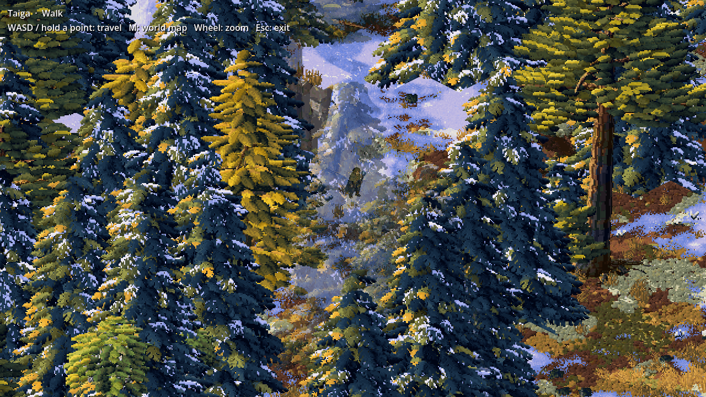
In the game: the Taiga. Snow lies on the spruces' shelves and in drifts on the ground, larches have turned gold, and the trees in front of the player fade so you can see who you are.
Out of the lab, into the game
Last time the Sculpted Pixels style was a set of stills made by a lab tool. Now the game draws it live as you walk: it builds the land in patches around you on spare processor cores and keeps them on disk, so you never see a placeholder. The first view waits on a short loading card instead. The player walks at the scale the ground is drawn at, and bumps into trunks and boulders where they are drawn, not where an old sprite used to stand.
It is still behind a switch (--sculpted-world) while it grows, but every land in this post was checked in the running game, not only in the lab.
Five lands, each from a painting
For each land the game's creator made a reference painting in ChatGPT, and each land is now built to match its picture: its colours measured from it, and the things in it, flowers, reeds, snow, sagebrush, made one by one by the game's own code. Here is each one beside the picture it came from.
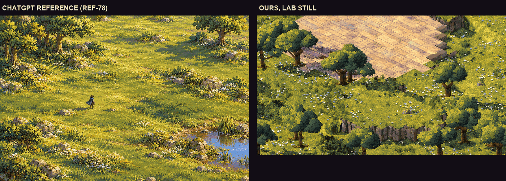
Grassland. Left, the reference; right, ours. A carpet of sunlit grass with drifts of white, blue and gold flowers, mossy boulders and broad oaks.
The meadow taught the rule that now holds everywhere: nothing may look square, even though the world is built on a grid of tiles. Small rises used to make flat-topped grass boxes with a hard edge. Now they are smooth slopes that bend across the tiles; where a step really is a step, it is rock. Ponds got a muddy, wandering shore, tall reeds, mossy stones half in the water, lily pads, and the far bank mirrored in the surface.
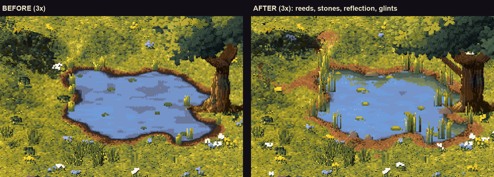
A meadow pond before (left) and after (right), close up.
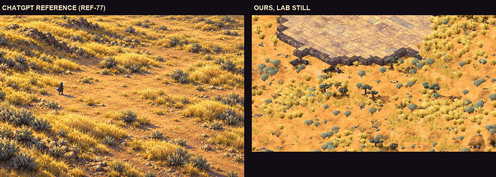
Steppe. Open red earth, golden bunchgrass in drifts with bare ground between, sagebrush on dark woody trunks, and knots of stone on the rises. The first try had grass like thin strokes and sage like grey blobs; the creator's comparison with the painting sent it back for proper tufts and bushes at the right size.
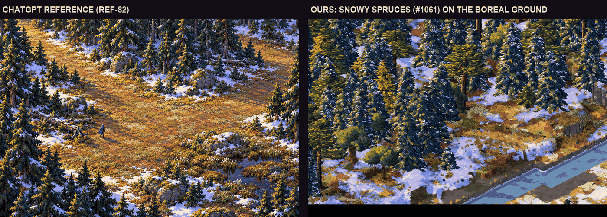
Taiga. Spruces of long drooping sprays with snow on them, golden larches, and a forest floor of lichen, moss, peat and snow drifts that gather in the shade. "The snow and the subtle differences in light and colour really make the references great," said the review of round one, so round two went after exactly that.
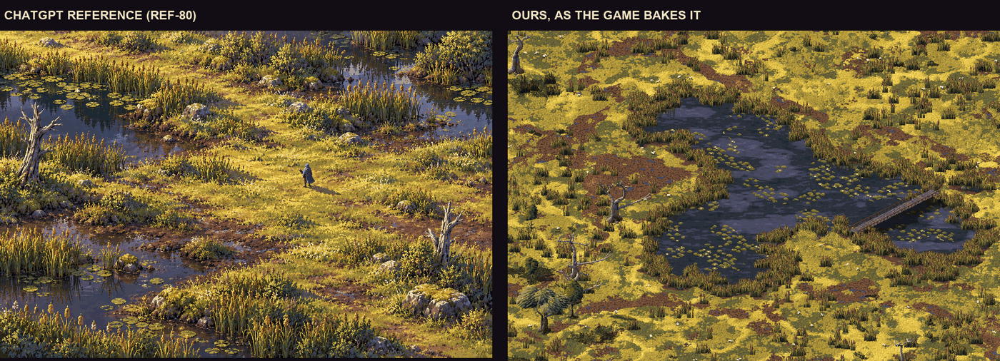
Marsh, after three rounds. Dark pools ringed by dense walls of reeds, water that mirrors the reeds and the sky, lily pads in rafts, and sunlit sedge with wet peat between.
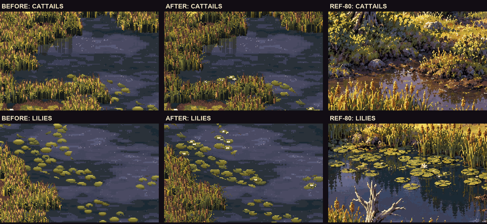
Round three was all about two things: cattails with fat velvety heads above broad curving leaves, and lily pads with the notch to their centre and the odd white flower.
Trees, borders, stairs and bridges
Every tree is now drawn as its own kind. Meadows grow oaks; the autumn woods grow great crimson oaks and gold birches; the north grows spruces, pines and larches; and when a tree is young, it looks young.
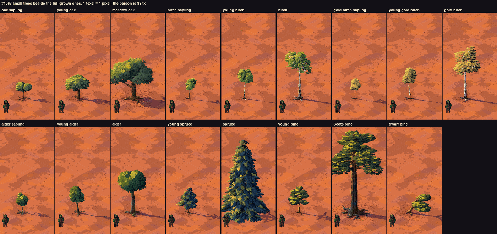
Saplings and young trees beside the grown ones: oaks, white-barked birches, alders, a young spruce spire, a young pine with its first whorls, and a wind-bent dwarf pine for the tree line.
Where two lands meet, they used to meet in a straight line, sometimes forty tiles long. Now the meadow gives way to the woods across a wide band that wanders, with islands of one in the other, and the woods' trees thin out along the same line as their ground.
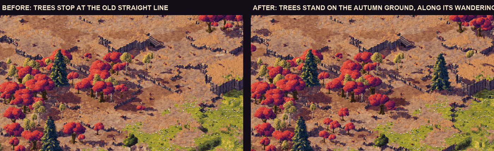
Where the meadow meets the autumn woods. Before, the trees stopped at the old straight line; after, they stand on their own ground, wherever it wanders.
The last two flat placeholders are gone. The creator spotted "a square" by a cliff: it was a staircase the new art did not draw yet. Stairs are now worn stone steps, and bridges are stone decks on piers or planks slung on ropes, all walked at the height they are drawn.
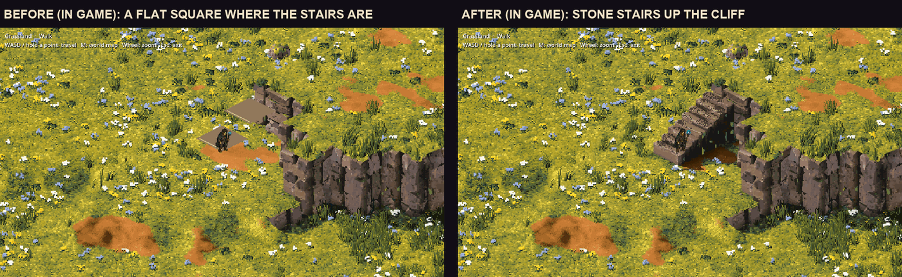
The square, and the stairs it really was.
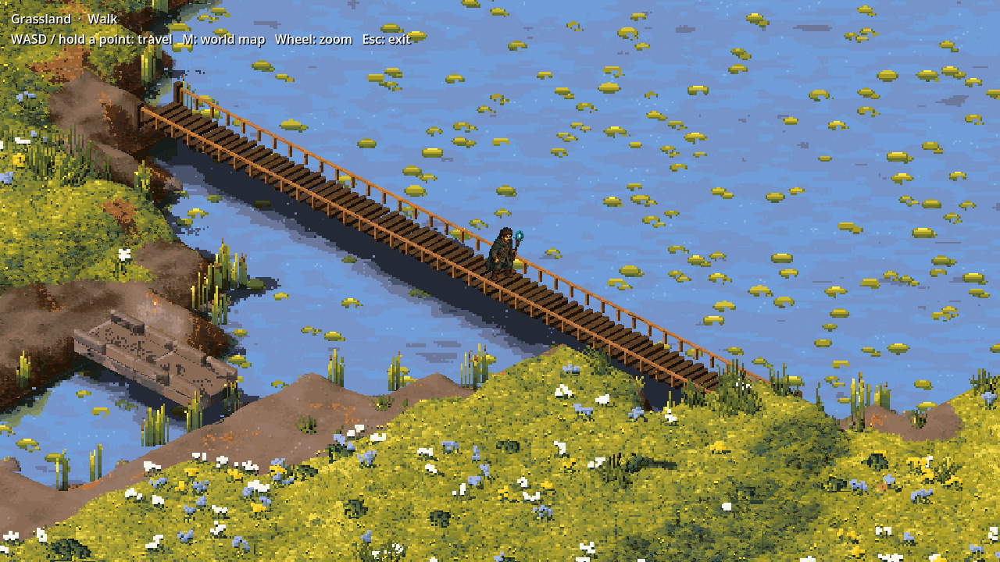
A rope bridge, in the game.
Faster, lighter
All this detail costs time to build. Two rounds of work, each checked to leave every pixel exactly as it was, brought it back down: new land bakes three to five times sooner than at the start of the week, then marsh land another 40% and taiga 25% faster on top. The textures each patch of land needs shrank by a third (in the taiga, from about 610 MB to about 400 MB around you), and the frame stays smooth while new land streams in.
Meanwhile, elsewhere in the world
- Minds. A wolf, the village guards and the travelling merchants now choose what to do with reasons, hold to a choice instead of dithering, and recover when interrupted: a wolf hunts, flees and feeds, a guard takes up a notice and searches, a merchant travels, turns back, opens shop and packs up. These minds are switched on with --minded while they are tested. The village walks proper routes now, going round houses and lamp posts instead of through them.
- The server. The multiplayer server's wolves think with the same minds as the game's, the pack's quarrels run there, and the animals near players live on the server.
- Fenrir. The first mythic beast lives in its own territory. Walk in and it warns you; leave and it lets you go; stay and it fights with a charge, a howl and, when hurt, the snapping of its chains. Beat it and you are Fenrir's Bane, and a sure enough hand can take its fang and pelt. For now you find it with a switch (--fenrir).
- Saves keep the things you put down on the ground, and no longer lose a save they cannot fully read.
- The Guild Field Ledger, an illustrated book of the creatures, with pages that turn.
What is next
More lands from their paintings: the Beach is being built now, then the desert, the mountains, the karst and the cloud forest. Pinewood's pine tufts still stack into flat pads, rope bridges do not sag yet, and up close the marsh's reeds still want to arch more, like the painting's.